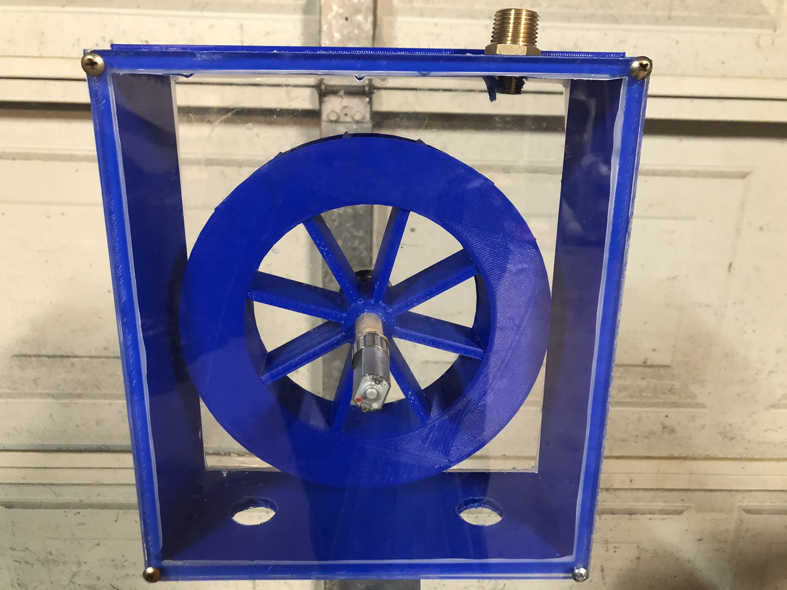

Assembled 3D-printed water-wheel generator.
Click any thumbnail to view it larger.
Project Overview
Turning a printed mechanism into a small generator.
This class project combined 3D printing, mechanical packaging, and basic electrical generation. I designed and fabricated a wheel and enclosure, integrated the rotating assembly with a small motor/generator, and tested the system using flowing water.
The goal was to demonstrate energy conversion in a physical prototype: water flow rotated the printed wheel, which drove the electrical component and produced enough output to power an LED.
What I worked on
- Designed the enclosure and water-wheel geometry.
- 3D printed the wheel and supporting structure.
- Integrated the rotating shaft and electrical generator.
- Assembled and water-tested the completed prototype.